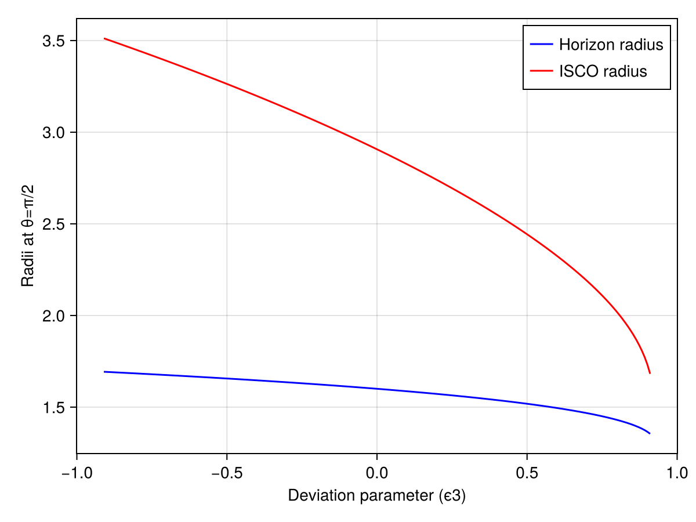
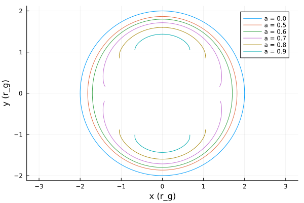
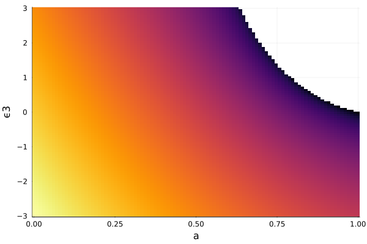
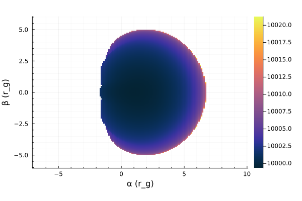
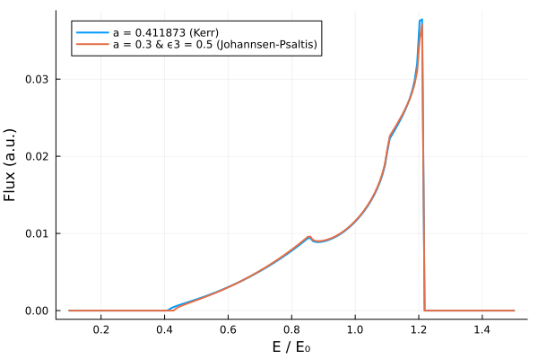
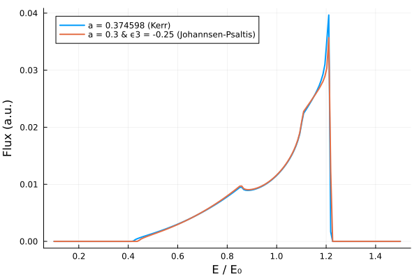

Johannsen–Psaltis metric
The Johannsen–Psaltis metric is a Kerr-like parametric deviation designed to test the no-hair theorem in the strong-field regime close to a black hole. It has three parameters: mass M, spin a, and deviation $\epsilon_{3}$.
Metric definition
The Johannsen–Psaltis metric is given by
\[ds^2 = - \left(1 - \dfrac{r_s r}{\Sigma}\right)(1+h)\, dt^2 - \dfrac{2 r_s a r \sin^2\theta}{\Sigma} (1+h)\, dt\, d\phi + \dfrac{\Sigma (1+h)}{\Delta + a^2 h \sin^2\theta}\, dr^2 + \Sigma\, d\theta^2 \\[3mm] + \left(r^2 + a^2 + \dfrac{r_s a^2 r \sin^2\theta}{\Sigma} + \dfrac{a^2 (\Sigma + r_s r) \sin^2\theta}{\Sigma} h \right) \sin^2\theta\, d\phi^2\]
or in matrix form:
\[g_{\mu\nu} = \begin{pmatrix} -(1+h)\left(1-\dfrac{r_s r}{\Sigma}\right) & 0 & 0 & -(1+h)\dfrac{a r_s r \sin^2\theta}{\Sigma} \\ 0 & \dfrac{\Sigma(1+h)}{\Delta + a^2 h \sin^2\theta} & 0 & 0 \\ 0 & 0 & \Sigma & 0 \\ -(1+h)\dfrac{a r_s r \sin^2\theta}{\Sigma} & 0 & 0 & \sin^2\theta \left[r^2+a^2+\dfrac{a^2 r_s r \sin^2\theta}{\Sigma} +h\dfrac{a^2(\Sigma+r_s r)\sin^2\theta}{\Sigma}\right] \end{pmatrix}\]
where
\[\Sigma = r^{2} + a^{2} \cos^{2}\theta, \quad \Delta = r^{2} - r_{s} r + a^{2}, \quad r_{s} = 2 M, \quad h = \epsilon_3 \dfrac{(r_s/2)^3 r}{\Sigma^2}\]
- ($a$) : spin parameter $(0 \le a \le M)$
- ($\epsilon_{3}$) : deviation parameter
Parametric deviation Paramter
In the Johannsen–Psaltis metric, the deformation parameter ϵ3 is used to introduce deviations from the Kerr spacetime. The radii of the event horizon and the ISCO were plotted for different values of ϵ3.
Click to expand / collapse code block.
using Gradus
using Makie, CairoMakie
# Create a range of ϵ3 values from -1 to 1 with 200 steps
ϵ3_values = range(-0.91, 0.91, length=200)
# Initialize an array to store the horizon radii
horizon_radii = zeros(length(ϵ3_values))
# Initialize an array to store the ISCO radii
isco_radii = zeros(length(ϵ3_values))
# Initialize an array to store the photon orbit radii
#photon_radii = zeros(length(ϵ3_values))
# Calculate the horizon radius for each value of ϵ3
for (i, ϵ3) in enumerate(ϵ3_values)
# m = KerrMetric(M = 1.0, a = a)
m = JohannsenPsaltisMetric(M = 1.0, a = 0.8, ϵ3 = ϵ3)
rs, θs = event_horizon(m, resolution = 200)
# Find the index closest to the equatorial plane (θ = π/2)
closest_idx = argmin(abs.(θs .- π/2))
# Extract the radius at that index
horizon_radii[i] = rs[closest_idx]
# Calculate the ISCO radius
println("Metric: ", m)
isco_radii[i] = Gradus.isco(m)
#Calculate the photon orbit radius
#photon_radii[i] = 2*(1+cos((2/3)*acos(-a)))
end
# Plot the horizon radius as a function of ϵ3
fig = Figure()
ax = Axis(fig[1, 1], xlabel="Deviation parameter (ϵ3)", ylabel="Horizon radius at θ=π/2")
lines!(ax, ϵ3_values, horizon_radii, color=:blue, label="Horizon radius")
lines!(ax, ϵ3_values, isco_radii, color=:red, label="ISCO radius")
#lines!(ax, ϵ3_values, photon_radii, color=:green, label="Photon orbit radius")
axislegend(ax) # Add a legend using the labels
fig

Naked Singularities
Certain combinations of spin $(a)$ and the deviatoin parameter $(\epsilon_{3})$ can lead to the black hole having no event horizon at certain angles. This would lead to the singularity being exposed which is called a naked singularity.
The plot below shows the event horizon in the equatorial plane for different values of spin for $\epsilon_{3} = 2$. The parts of the event horizon that have no solution is where a naked singularity would be present.
Click to expand / collapse code block.
using Gradus, Plots
function draw_horizon(p, m)
rs, θs = event_horizon(m, resolution = 200)
radius = rs
x = @. radius * sin(θs)
y = @. radius * cos(θs)
plot!(p, x, y, label = "a = $(m.a)")
end
p = plot(aspect_ratio = 1)
for a in [0.0, 0.5, 0.6, 0.7, 0.8, 0.9]
m = JohannsenPsaltisMetric(M = 1.0, a = a, ϵ3 = 2.0)
draw_horizon(p, m)
end
p
It can be seen from the plot below which combinations of $a$ and $\epsilon_3$ will produce a naked singularity.
Click to expand / collapse code block.
using Gradus
using Plots
function calc_exclusion(as, ϵs)
regions = zeros(Float64, (length(as), length(ϵs)))
Threads.@threads for i in eachindex(as)
a = as[i]
for (j, ϵ) in enumerate(ϵs)
m = JohannsenPsaltisMetric(M = 1.0, a = a, ϵ3 = ϵ)
regions[i, j] = if is_naked_singularity(m)
NaN
else
Gradus.isco(m)
end
end
end
regions
end
as = range(0, 1.0, 100)
ϵs = range(-10, 10, 100)
img = calc_exclusion(as, ϵs)
heatmap(
as,
ϵs,
img',
colorbar = false,
xlabel = "a",
ylabel = "ϵ"
)
Shawdow map
Click to expand / collapse code block.
sing Gradus, Plots
m = JohannsenPsaltisMetric(M = 1.0, a = 0.9, ϵ3 = 2.0 )
x = SVector(0.0, 10000.0, π / 2, 0.0)
α, β, img = rendergeodesics(
m,
x,
20_000.0,
image_width = 100,
image_height = 100,
αlims = (-6, 6),
βlims = (-6, 6),
verbose = true,
ensemble = Gradus.EnsembleSerial(),
)
p = Plots.heatmap(
α,
β,
img,
color = Plots.cgrad(:thermal, rev = false),
xlabel = "α",
ylabel = "β",
aspect_ratio = 1,
minorgrid = true,
)
Degeneracy Testing
Certain deformation parameter $\epsilon_{3}$ and spin a combinations for the Johannsen-Psaltis metric can produce indistinguishable spectral line profiles to the Kerr metric of a different spin.
Click to expand / collapse code block.
using Gradus
using StaticArrays
using Plots
using Interpolations, Statistics
a1 = 0.411873
a2 = 0.3
ϵ3 = 0.5
m1 = KerrMetric(M = 1.0, a = a1) #defines the spacetime
m2 = JohannsenPsaltisMetric(M = 1.0, a = a2, ϵ3 = ϵ3 )
#is_naked_singularity(m2)
d = ThinDisc(0.0, Inf) #defines the accretion disk. Gradus will start with the emission at the ISCO and extends to infinity
x = SVector(0.0, 10_000.0, deg2rad(60), 0.0)#defines the observers position in spacetime (t, r, θ, ϕ)
bins1, flux1 = lineprofile(m1, x, d)
bins2, flux2 = lineprofile(m2, x, d)
#bins2, flux2 = lineprofile(m2, x, d; )#method = BinningMethod())
Plots.plot(
bins1,
flux1,
xlabel = "E / E₀",
ylabel = "Flux (a.u.)",
legend = true,
lw = 2,
label = "a = $a1 (Kerr)"
)
Plots.plot!(
bins2,
flux2,
xlabel = "E / E₀",
ylabel = "Flux (a.u.)",
legend = true,
lw = 2,
label = "a = $a2 & ϵ3 = $ϵ3 (Johannsen-Psaltis)"
)

